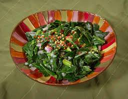

Collard Greens

Description
Collard greens is a dish consisting of the leaves of the collard plant cut into rough chunks, wilted in oil, and boiled in stock.
Ingredients
- 2 lbs collard
- 1 lbs bacon
- 1 large onion
- 2 quarts chicken stock
- 1 tbs minced garlic
- 1 tbs red pepper flakes
- salt, to taste
- pepper, to taste
Steps
- Brown the bacon in a large pot.
- While the bacon is browning, roughly chop collard leaves and onion.
- When the bacon is browned, remove it from the pot, and lower collard leaves into the bacon fat in the bottom of the pot. Cook the collard on medium heat until wilted.
- Chop the bacon into bits.
- When collard is wilted, add onion, bacon and spices to the pot. Cook until the onion is translucent and the spices are fragrant, but not burned.
- Add chicken stock to the pot. Bring the mixture to a boil. Reduce, stirring occasionally, until the collard is no longer swimming.